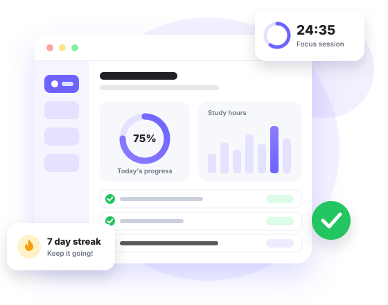

Smart Task Management
Organize assignments, deadlines and daily tasks in one simple workspace.
Built for students
Plan your day, manage your tasks, and build better study habits with FocusFlow.

Features
Four simple tools that work together, so you spend less time organising and more time learning.
Organize assignments, deadlines and daily tasks in one simple workspace.
Plan your study sessions and create a structured weekly routine.
Use focused study sessions with built-in breaks to maintain concentration.
Track completed tasks, study hours and productivity progress.
Dashboard
A preview of the dashboard: progress, tasks, study hours and your streak in one place.
75%
Of today's plan is done
6 / 8
2 tasks left
4.5 hrs
Goal: 6 hours a day
7 days
Goal: 10 days in a row
Task Manager
Add a task, tick it off when it's done, or delete it. The counters update instantly.
No tasks yet. Add one to get started!
Focus Timer
The Pomodoro technique splits study time into short, focused sprints. It's simple, and it works.
Focus
Ready when you are.
Study Planner
A structured routine for the week. Today is highlighted so you always know what comes next.
DSA — Arrays
2 hrs
DBMS — SQL
1.5 hrs
Quantitative Aptitude
1 hr
Operating Systems
1.5 hrs
Python Practice
2 hrs
Mock Test
3 hrs
Revision
1 hr
Progress
Small, steady progress adds up. Here is how a good week can look.
32 / 40 hours
8 hours to go this week.
75% done
6 of 8 tasks finished.
7 days
Student Stories
Sample testimonials from fictional students, written to show how FocusFlow could fit into a study routine.
FocusFlow helped me organize my study routine and stop procrastinating.
The 25-minute timer turned my messy evenings into focused sprints. I finish my revision earlier now.
Seeing my streak and weekly hours grow every day keeps me motivated, even during exam season.
FAQ
FocusFlow is a student productivity dashboard that brings a task manager, a Pomodoro focus timer, a weekly study planner and progress tracking together in one clean page.
Yes. FocusFlow is designed mobile-first, so every section adapts to phones, tablets and desktops, and the navigation collapses into a menu on small screens.
It does. The timer runs entirely in your browser with JavaScript and uses your device clock, so it stays accurate even if the tab is in the background. No server is needed.
Absolutely. Add tasks, tick them off, untick them or delete them at any time, and the counters update instantly without reloading the page.
Yes. FocusFlow is a free student project with no sign-up, no ads and no payment required.